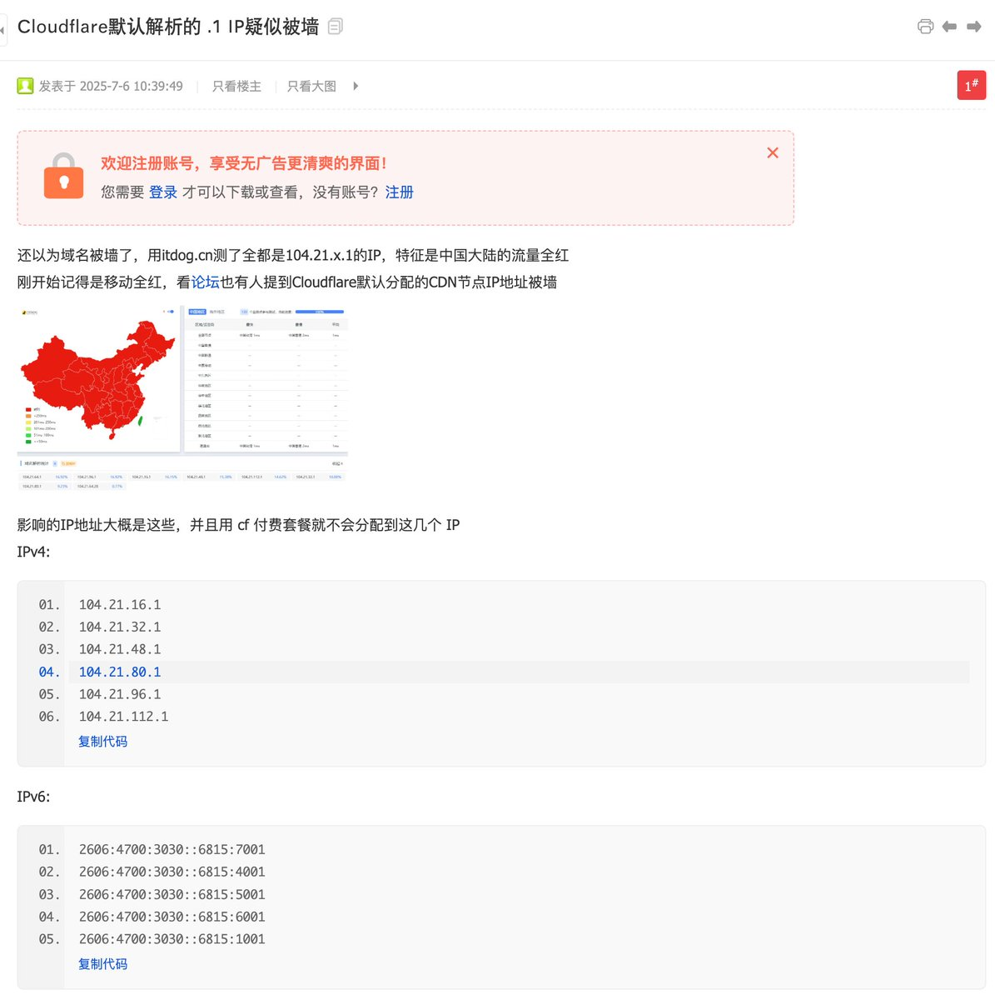

@TooooooBug 感谢引用论坛~这个问题确实也挺困扰的，之前
https://t.co/6BGyA2AiQF
也遇到过这种问题，后面是迁移到华为云上（因为华为云的TTL=1等都是DNSPod企业版的功能，分区域细化）对中国内地做了所谓的cf for saas（也就是优选


托管在Cloudflare CDN上的部分域名，疑似命中某些名单/规则，Cloudflare主动返回被墙IP（最后一段始终是是.1）从而实现在中国内地无法被访问到。
https://t.co/I2IZiJWARF https://t.co/juFVR2wY0N https://t.co/ZruinGhJFH
https://t.co/I2IZiJWARF https://t.co/juFVR2wY0N https://t.co/ZruinGhJFH